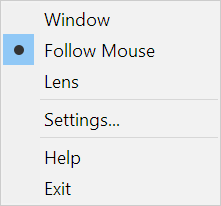
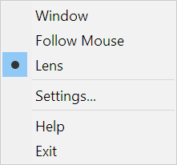
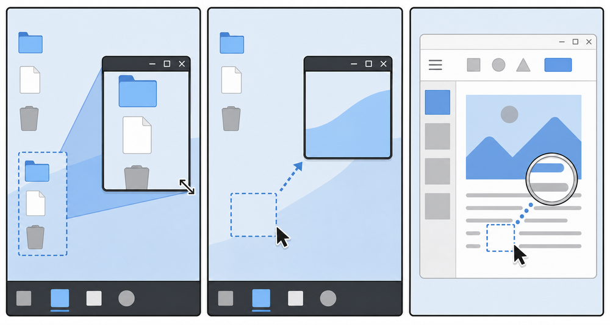

Window: the interactive framed magnifier.

Follow Mouse: MAG stays put while the source follows the pointer.

Lens: the topmost click-through lens follows the pointer.
The MAG frame remains live during move and resize. Input behavior changes by mode, but the selected capture/render/presentation route remains the same.
| Action | Effect |
|---|---|
| Mouse wheel | Zooms in or out using nonlinear steps: fast across low magnification and finer at high magnification. |
| Mouse-relative wheel zoom | When enabled in Settings, keeps the desktop point under the pointer stable while zooming in Window mode. |
| Drag the frame | Moves MAG. The presented source is updated while the move loop is active. |
| Drag an edge or corner | Resizes MAG. Capture, overlay layout, and presentation continue during the modal resize loop. |
| Drag inside the minimap | Pans the visible source rectangle inside the captured desktop. At 1.0×, panning pins the selected source until MAG itself is moved. |
| Right-click the frame | Opens the context menu. |
| Right-click the tray icon | Opens the same context menu at the pointer. |
| Key | Effect |
|---|---|
| Space | Leaves Follow Mouse mode and returns to Window mode. It does not apply in click-through Lens mode. |
| Escape | Closes MAG when its window has focus. It does not intercept input in Lens mode. |
| Mode | Input behavior |
|---|---|
| Window | Frame dragging, resizing, wheel zoom, minimap interaction, keyboard shortcuts, and the context menu are available. |
| Follow Mouse | The capture follows the pointer while MAG remains interactive. Minimap panning is available without leaving the mode. |
| Lens | MAG is topmost, non-activating, and click-through. Overlay controls are disabled and input goes to the underlying window. |
|
Window: the interactive framed magnifier. |
 Follow Mouse: MAG stays put while the source follows the pointer. |
 Lens: the topmost click-through lens follows the pointer. |

From left to right: Window mode anchors the view to MAG; Follow Mouse keeps MAG fixed while the source follows the pointer; Lens moves the click-through magnifier with the pointer.
The minimap shows capture bounds, monitor boundaries, the visible source rectangle, and the MAG window rectangle. It appears during relevant mouse activity, move/resize, zoom, and pinned-source interaction, then fades when it is no longer needed.
MAG clips the source to the active capture bounds and keeps the requested view filled without stretching stale geometry. Follow Mouse and Lens center the source on the pointer subject to monitor/capture edges. Window mode normally anchors the source to the MAG window unless minimap panning has pinned another origin.
Drag any edge or corner continuously. MAG handles the move/size timer while User32 owns the modal loop, recalculates the source and UI rectangles for each published client size, and presents before the loop ends. Long-lived graphics objects and capacity reservoirs are retained when the new size fits; only size-dependent buffers that cannot contain the frame are replaced.